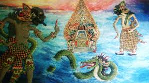

Dewa Ruci

Madeg karaton Astinapura. Prabu Dhestarasta kaadhep dening putra mabrepe, Duryudana, Patih Sengkuni, lan Pandhita Krepo. Surasane rerembugan ana gandheng cenenge karo peprentah Astina ing tembe mburine marang Kurawa, ngengeti para Pandhawa wis wiwit dewasa. Duryudana ngesuk bapake, kapan dheweke bakal winisuda dadi Ratu Anom ing Astina. Sawetara Sengkuni mbudidaya mbujuk Prabu Dhestarasta, supaya hak tumrap keprabon lan karaton Astina tetep dadi duweke Kurawa. Sebab yen keprabon lan keraton dibalekake marang Pandhawa, kepiye nasibe Kurawa kang acacah satus bocah. Sawijine cara yaiku ngelongi kuwatane pandhawa. Amarga kekuwatane Pandhawa dumunung marang Bima, mula Bima kudu disingkirake.
Dene ing keputren, Dewi Gendari mahargya rawuhe Prabu Dhestarasta. Dewi Gendari nakokake babagan rantaman wisudane Duryudana dadi ratu Anom ing Astina. Prabu Dhestarasta ngendika lagi digolekake wektu lan wayah kag trep supaya ora nuwuhake congkrah karo Pandhawa. Dewi Gendari aweh panemu Pandhawa kudu disingkirake supaya keprabon Astina tetep dadi duweke Duryudana. Prabu Dhestarasta nerangake lamun panemune Dewi Gendari wis kamot ana rancangane Sengkuni kang bakal ngelongi kekuwatane Pandhawa.
Dene ing keputren, Dewi Gendari mahargya rawuhe Prabu Dhestarasta. Dewi Gendari nakokake babagan rantaman wisudane Duryudana dadi ratu Anom ing Astina. Prabu Dhestarasta ngendika lagi digolekake wektu lan wayah kag trep supaya ora nuwuhake congkrah karo Pandhawa. Dewi Gendari aweh panemu Pandhawa kudu disingkirake supaya keprabon Astina tetep dadi duweke Duryudana. Prabu Dhestarasta nerangake lamun panemune Dewi Gendari wis kamot ana rancangane Sengkuni kang bakal ngelongi kekuwatane Pandhawa.
Lagya kang ana ing pertapan Sokalima. Pandhita Durna kaadhep deneng anak siji-sijine, Aswatama. Ora let suwe Durydana lan Sengkuni teka. Sawise ngabarake kaslametan, Duryudana ngandhakake niyate njaluk pambiyantune Begawan Durna supaya nyingkirake Bima. Iki kanggo waluyaning keprabon Astina marang Kurawa. Wiwitane Begawan Durna kabotan. Nanging Duryudana lan Sengkuni ngesuk kanthi cara ngundhamana dedununge Resi Durna ing Astina ora ucul saka lelabuhan lan lomane Prabu Dhestarasta. Kasurung saka utang budi, Resi Durna tundhone saguh mujudi panjalukane Duryudana.
Sawise sengkuni lan Duryudana lunga, resi Durna banjur nyeluk Bima. Kanthi alesan kanggo ngluhurake Pandhawa, Bima dikongkon golek banyu panguripan Tirtapawitra menyang Gunung Candradimuka. Bima sanggup banjur enggal-enggal budhal.
Nalika semana ana ing pinggire gunung Candradimuka. Ing perenge gunung Candradimuka nalika Bima ngembrukake wit-wit gedhe lan njegol watu-watu gedhe nggoleki Tirtapawitra, njedhul buta loro cacahe, Rukmuka lan Rukmakala. Kalorone buta mau nglarang ngrusak tatanan panguripan ing gunung Candradimuka lan Tirtapawitra ora ana ing gunung kuwi. Dumadi gesehe panemu, banjur dadi bandayuda. Amarga saka ampuhe kuku Pancanaka. Bima kasil mateni Rukmuka lan Rukmakala. Sawise mati jasade badhar dadi bathara Indra lan bathara Bayu.
Bathara Indra nerangake, lamun Tirtapawitra ora ana ing gunung Candradimuka. Bima didhawuhi bali ngadep marang Resi Durna jaluk katrangan kang cetha dununge Tirtapawitra. Bima manut, bali menyang Sokalima nemoni Resi Durna. Dene Batara Indra lan Batara Bayu bali menyang kahyangan.
Gumelar ing ereng-erenge gunung Candradimuka. Arjuna lan Yamawidura ketemu karo rombongan Kurawa. Dumadi bedaning panemu kang ndadekake pasulayan. Arjuna lan Yamawidura dikroyok dening Kurawa. Nalika kedhesek, Bima teka langsung mbiyantu ngoyak Kurawa. Bima ngomong yen Tirtapawitra ora ana ing gunung Candradimuka. Katelune banjur pisah, bima menyang Sokalima lan Arjuna bali menyang keputren Astina nemoni Dewi Kunthi lan kulawarga Pandawa liyane.
Ing pertapan Sokalima, Resi Durna nampa tekane Bima. Kanthi ringkes Bima ngandhakake lamun Tirtapawitra ora ana ing Gunung Candradimuka. Dheweke uga ketemu karo buta loro panjalmane Bathara Indra lan Bathara Bayu. Dewe kalorone ngendika ing Gunung Candradimuka ora ana sing jenenge Tirtapawitra. Resi Durna ngandhakake, dheweke dhawuhi Bima menyang Gunung Candradimuka mung kanggo nguji kesabarane Bima. Amarga Bima pancen santosa lan kuwat kekarepane, mula saka iki dheweke nuduhake panggonan mapane Tirtapawitra, yaiku ing dhasare samodra. Bima langsung pamit arep tujumu menyang segara kidul.
Gelare keputren Astina. Dewi Kunti lan Puntadewa nampa tekane Arjuna lan Yamawidura. Yamawidura ngandhakake kabar ketemu karo Bima ing Gunung Candradimuka. Bima durung kasil nemokake Tirtapawitra, mulane dheweke bali menyang Sokalima nemoni Resi Durna. Ora let suwe Bima teka. Bima nyuwun donga pangestune ibu kan seduluru arep nggoleki Tirtapawitra ing dhasare samudra cundhuk karo dhawuhe Resi Durna. Dewi Kunthi, Puntadewa, Yamawidura, lan Arjuna mbudidaya galang-ngalangi Bima Supaya murungake niyate golek banyu suci Tirtapawitra. Dewi Kunthi ngandhakake yen barang kuwi ora ana. Kabeh mau mung rekadaya Resi Durna kang arep nyilakani Bima. Nanging Bima tetep mantep marang kapercayane, lamun minangka guru, Resi Durna ora bakal nyilakani muride dhewe. Dhawuhe guru kudu ditindakake dening murid. Tundhone Bima budhal nggoleki Tirtapawitra ing dhasaring samodra. Dewi Kuthi dawuh marang Yamawidura lan Arjuna ngawat-awati lakune Bima.
Ing dhasare samodra ana ula ngadhang lakune Bima. Pasulayan rame dumadi. Kalorone mbudidaya nyilakani siji lan sijine. Tundhoning pasulayan, Bima mateni ula kuwi, nanging dheweke uga semaput kena gitikane buntut ula mau. Bima klelep tekan dhasare samodra.
Katon dewi Ruci lagi pasatemon karo Bima. Dewa Ruci takon apa kekarepane Bima njegur nganti ing dhasaring samodra. Bima jlentrehake, yen dheweke nindakake dhawuhe gurune, Resi Durna supaya nggoleki banyu panguripan Tirtapawitra. Dewa Ruci nerangake, dene Tirtapawitra ora mapan ana ing Gunung Candradimuka, apa dene ing dhasare samodra. Tirtapawitra sejatine mapan ana ing dhiri pribadine Bima Dhewe, kang wujude inti niyat kanggo tumindak jujur lan berbudi luhur, sarta ngenggonake rasa kurmat marang sapadhane. Nindakake kabecikan tanpa pamrih, tresna marang sapadhane kaya dene tresna marang awake dhewe. Saka Dewa Ruci, Bima antuk ajaran/wejangan babagan ilmu kasampurnan, ing antarane njlentrehake babagan asaling dumadi, sangkan paraning dumadi, lan tataraning dumadi. Bima banjur didhawuhi bali menyang Astina nglumpuk karo ibune lan sedulure, amarga isih akeh kewajiban kang kudu ditindakake.
Ana kekadeyan ing gisiking samodra. Arjuna lan Yamawidura geseh panemu maneh karo Kurawa kang dipandhegani dening Sengkuni kang lagi gawe pager betis ing pinggire samodra. Pasulayan ora isa diendhani maneh. Kurawa ngroyok Arjuna lan Yamawidura. Bejane nalika kalorone kepepet, Bima jumedhul saka jeroning samodra. Ngreteni Arjuna lan Yamawidura dikroyok kurawa, Bima banjur cekat-ceket mbiyantu. Kurawa ora bisa nandhingi kridhane Bima, banjur kabeh pada mlayu salang tunjang. Banjur Bima, Arjuna, lan Yamawidura bali menyang Astina.
Nalika semana madeng kaputren Astina. Dewi Kunthi kaadhep dening para putrane, Puntadewa, Bima, Arjuna, Nakula, Sadewa, lan Yamawidura. Bima nyritakake pasatemone karo Dewa Ruci ing dhasaring samodra, lan entuk wejanangan babagan sarining panguripan. Dewi Kunthi syukur banget, dene Bima kasil slamet lulus saka pacoban kang abot. Dewi Kunthi banjur ngajak putra-putrane supaya ngaturake donga marang Gusti Kang Maha Tunggal, supaya kaluwarga Pandhawa tansah antuk kawilujengan, rahmat lan Hidayah-He.